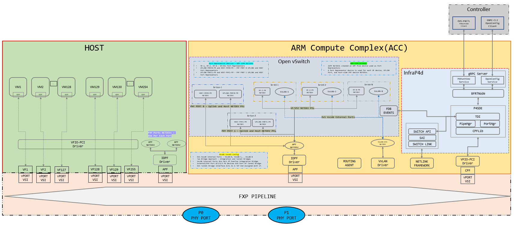

Linux Networking with ECMP (ES2K)
This document explains how to run the Linux networking scenario on ES2K.
Topology

See Linux Networking for ES2K for more details on this feature.
Prerequisites:
Download
hw-p4-programsTAR file specific to the build and extract it to getfxp-net_linux-networking-v2p4 artifacts. Go throughLimitationsspecified inREADMEand bring up the setup accordingly.Follow steps mentioned in Deploying P4 Programs for E2100 for bringing up IPU with a custom P4 package. Modify
load_custom_pkg.shwith following parameters for linux_networking package:
sed -i 's/sem_num_pages = 1;/sem_num_pages = 25;/g' $CP_INIT_CFG
sed -i 's/lem_num_pages = 1;/lem_num_pages = 10;/g' $CP_INIT_CFG
sed -i 's/acc_apf = 4;/acc_apf = 8;/g' $CP_INIT_CFG
Download
IPU_DocumentationTAR file specific to the build and refer toGetting Started Guideon how to install compatibleIDPF driveron host. Once an IDPF driver is installed, bring up SRIOV VF by modifying thesriov_numvfsfile present under one of the IDPF network devices. Example as belowecho 2 > /sys/class/net/ens802f0/device/sriov_numvfs
Notes about topology:
VMs are spawned on top of each VF. Each VF will have a port representor in ACC. P4 runtime rules are configured to map VFs and their corresponding port representors.
Each physical port will have a port representor in ACC. P4 runtime rules are configured to map VFs and their corresponding port representors.
Each physical port will have a corresponding APF netdev on HOST. Create port representors in ACC for each HOST APF netdev. These APF netdevs on HOST will receive unknown traffic for applications to act on.
All port representors should be part of an OvS bridge. Based on topology, this OvS bridge will just perform bridging or TEP termination on a bridge which is used to enable underlay connectivity for VxLAN traffic.
OvS bridges and VxLAN ports are created using ovs-vsctl command (provided by the networking recipe).
All port representors are attached to OvS bridge using ovs-vsctl command.
This config has:
2 Overlay VFs
2 Port representors in ACC for the 2 Overlay VFs
2 physical ports
2 Port representors in ACC for the 2 physical ports
2 APF netdevs on HOST
2 Port representors in ACC for the 2 HOST APF netdevs
TEP termination dummy interface
System under test will have above topology running the networking recipe. Link Partner can have the networking recipe or legacy OvS or kernel VxLAN. Refer to the Limitations section in Linux Networking for E2100 before setting up the topology.
Creating the topology
Follow steps mentioned in Running Infrap4d on Intel E2100 for starting infrap4d process and creating protobuf binary for fxp-net_linux-networking-v2 p4 program.
Port mapping
These VSI values can be checked with /usr/bin/cli_client -q -c command on IMC. This command provides VSI ID, Vport ID, and MAC addresses for all:
IDPF netdevs on ACC
VFs on HOST
IDPF netdevs on HOST (if IDPF driver loaded by you on HOST)
Netdevs on IMC
Overlay VFs |
Overlay VFs VSI ID |
ACC port representor |
ACC port representor VSI ID |
|---|---|---|---|
ens802f0v0 |
(0x1b) 27 |
enp0s1f0d1 |
(0x09) 9 |
ens802f0v1 |
(0x1c) 28 |
enp0s1f0d2 |
(0x0a) 10 |
Physical port |
Physical port ID |
ACC Port presenter |
ACC Port presenter VSI ID |
|---|---|---|---|
Phy port 0 |
(0x0) 0 |
enp0s1f0d9 |
(0x11) 17 |
Phy port 1 |
(0x1) 1 |
enp0s1f0d11 |
(0x13) 19 |
APF netdev |
APF netdev VSI ID |
ACC Port presenter |
ACC Port presenter VSI ID |
|---|---|---|---|
ens802f0d1 |
(0x18) 24 |
enp0s1f0d10 |
(0x12) 18 |
ens802f0d2 |
(0x19) 25 |
enp0s1f0d12 |
(0x14) 20 |
(NOTE: Port names and their VSI IDs may differ from setup to setup. Configure accordingly.)
Set the forwarding pipeline
Once the application is started, set the forwarding pipeline config using
P4Runtime Client p4rt-ctl set-pipe command
$P4CP_INSTALL/bin/p4rt-ctl set-pipe br0 $OUTPUT_DIR/fxp-net_linux-networking-v2.pb.bin \
$OUTPUT_DIR/p4info.txt
Note: Assumes that fxp-net_linux-networking-v2.pb.bin, p4info.txt and other P4 artifacts, are created by following the steps in the previous section.
Configure VSI Group and add a netdev
Add all ACC port representors to VSI group 1. VSI group 1 is dedicated for this configuration. Execute the following devmem commands on IMC.
# SEM_DIRECT_MAP_PGEN_CTRL: LSB 11-bit is for vsi which needs to map into vsig
devmem 0x20292002a0 64 0x8000050000000009
# SEM_DIRECT_MAP_PGEN_DATA_VSI_GROUP : This will set vsi
# (set in SEM_DIRECT_MAP_PGEN_CTRL register LSB) into VSIG-1.
devmem 0x2029200388 64 0x1
# SEM_DIRECT_MAP_PGEN_CTRL: LSB 11-bit is for vsi which needs to map into vsig
devmem 0x20292002a0 64 0xA000050000000009
Note: Here VSI 9 has been used as one of the ACC port representors and added to VSI group 1. For this use case, add all 6 IDPF interfaces created on ACC. Modify this VSI based on your configuration.
Start OvS as a separate process
Enhanced OvS is used as a control plane for source MAC learning of overlay VMs. This OvS binary is available as part of ACC build and should be started as a separate process.
export RUN_OVS=/opt/p4/p4-cp-nws
rm -rf $RUN_OVS/etc/openvswitch
rm -rf $RUN_OVS/var/run/openvswitch
mkdir -p $RUN_OVS/etc/openvswitch/
mkdir -p $RUN_OVS/var/run/openvswitch
ovsdb-tool create $RUN_OVS/etc/openvswitch/conf.db \
$RUN_OVS/share/openvswitch/vswitch.ovsschema
ovsdb-server \
--remote=punix:$RUN_OVS/var/run/openvswitch/db.sock \
--remote=db:Open_vSwitch,Open_vSwitch,manager_options \
--pidfile --detach
ovs-vsctl --no-wait init
mkdir -p /tmp/logs
ovs-vswitchd --pidfile --detach --mlockall \
--log-file=/tmp/logs/ovs-vswitchd.log
ovs-vsctl set Open_vSwitch . other_config:n-revalidator-threads=1
ovs-vsctl set Open_vSwitch . other_config:n-handler-threads=1
ovs-vsctl show
Create Overlay network
Option 1: Create VFs on HOST and spawn VMs on top of those VFs. Example: Below config is provided for one VM, and considering each VM is in one VLAN. Extend this to other VMs.
# VM1 configuration
telnet <VM1 IP> <VM1 port>
ip link add link <Netdev connected to VF1> name <Netdev connected to VF1>.10 type vlan id 10
ip addr add 101.0.0.1/24 dev <Netdev connected to VF1>.10
ifconfig <Netdev connected to VF> up
ifconfig <Netdev connected to VF>.10 up
Option 2: If we are unable to spawn VMs on top of the VFs, we can leverage kernel network namespaces. Move each VF to a network namespace and assign IP addresses. Example: Below config is provided for one overlay port, and tag each port in the namespace to a single VLAN. Extend this to other namespaces.
ip netns add VM0
ip link set <VF1 port> netns VM0
ip netns exec VM0 ip link add link <VF1 port> name <VF1 port>.10 type vlan id 10
ip netns exec VM0 ip addr add 101.0.0.1/24 dev <VF1 port>.10
ip netns exec VM0 ifconfig <VF1 port> up
ip netns exec VM0 ifconfig <VF1 port>.10 up
Configure rules for mapping between Overlay VF and ACC port representor
Configure rules to send overlay packets from a VM to its associated port representors.
Refer to above port mapping for overlay VF to ACC port representor mapping. Here, sample commands are shown for a single overlay network. Configure similar mapping for remaining VFs.
Example:
Overlay VF1 has a VSI value 27, its corresponding port representor has VSI value 9
If a VSI is used as an action, add an offset of 16 to the VSI value
# Create a source port for an overlay VF (VSI-27). Source port action can be any value.
# For simplicity add 16 to VSI ID.
p4rt-ctl add-entry br0 linux_networking_control.tx_source_port_v4 \
"vmeta.common.vsi=27,zero_padding=0,action=linux_networking_control.set_source_port(43)"
# Create a mapping between overlay VF (VSI-27/source port-43) and ACC port representor (VSI-9)
p4rt-ctl add-entry br0 linux_networking_control.source_port_to_pr_map \
"user_meta.cmeta.source_port=43,zero_padding=0,action=linux_networking_control.fwd_to_vsi(25)"
p4rt-ctl add-entry br0 linux_networking_control.tx_acc_vsi \
"vmeta.common.vsi=9,zero_padding=0,action=linux_networking_control.l2_fwd_and_bypass_bridge(43)"
# Create a mapping for traffic to flow between VSIs (VSI-27/source port-43) and (VSI-9)
p4rt-ctl add-entry br0 linux_networking_control.vsi_to_vsi_loopback \
"vmeta.common.vsi=9,target_vsi=27,action=linux_networking_control.fwd_to_vsi(43)"
p4rt-ctl add-entry br0 linux_networking_control.vsi_to_vsi_loopback \
"vmeta.common.vsi=27,target_vsi=9,action=linux_networking_control.fwd_to_vsi(25)"
Configure rules for mapping between Physical port and ACC port representor
Configure rules to send ingress packets from a physical port to its associated port representors.
Refer to above port mapping for physical port to ACC port representor mapping. Here, sample commands are shown for a single physical port. Configure similar mapping for remaining physical ports.
Example:
Physical port 0 port id is 0, its corresponding port representor has VSI value 17
If a VSI is used as an action, add an offset of 16 to the VSI value
# Create a source port for a physical port (Phy port-0). Source port action can be any value.
# For simplicity consider the same value as phy port id.
p4rt-ctl add-entry br0 linux_networking_control.rx_source_port \
"vmeta.common.port_id=0,zero_padding=0,action=linux_networking_control.set_source_port(0)"
# Create a mapping between physical port (Phy port 0/src port 0) and ACC port representor (VSI-17)
p4rt-ctl add-entry br0 linux_networking_control.rx_phy_port_to_pr_map \
"vmeta.common.port_id=0,zero_padding=0,action=linux_networking_control.fwd_to_vsi(33)"
p4rt-ctl add-entry br0 linux_networking_control.source_port_to_pr_map \
"user_meta.cmeta.source_port=0,zero_padding=0,action=linux_networking_control.fwd_to_vsi(33)"
p4rt-ctl add-entry br0 linux_networking_control.tx_acc_vsi \
"vmeta.common.vsi=17,zero_padding=0,action=linux_networking_control.l2_fwd_and_bypass_bridge(0)"
Configure rules for mapping between APF netdev on HOST and ACC port representor
Configure rules to send APF netdev on HOST to its associated port representors.
Refer to above port mapping for APF netdev on HOST to ACC port representor mapping. Here, sample commands are shown for APF netdev on HOST. Configure similar mapping for remaining APF netdevs on HOST.
Example:
APF netdev 1 on HOST has a VSI value 24, its corresponding port representor has VSI value 18
If a VSI is used as an action, add an offset of 16 to the VSI value
# Create a source port for an overlay VF (VSI-24). Source port action can be any value.
# For simplicity add 16 to VSI ID.
p4rt-ctl add-entry br0 linux_networking_control.tx_source_port_v4 \
"vmeta.common.vsi=24,zero_padding=0,action=linux_networking_control.set_source_port(40)"
# Create a mapping between overlay VF (VSI-24/source port-40) and ACC port representor (VSI-18)
p4rt-ctl add-entry br0 linux_networking_control.source_port_to_pr_map \
"user_meta.cmeta.source_port=40,zero_padding=0,action=linux_networking_control.fwd_to_vsi(34)"
p4rt-ctl add-entry br0 linux_networking_control.tx_acc_vsi \
"vmeta.common.vsi=17,zero_padding=0,action=linux_networking_control.l2_fwd_and_bypass_bridge(0)"
# Create a mapping for traffic to flow between VSIs (VSI-24/source port-40) and (VSI-18)
p4rt-ctl add-entry br0 linux_networking_control.vsi_to_vsi_loopback \
"vmeta.common.vsi=18,target_vsi=24,action=linux_networking_control.fwd_to_vsi(40)"
p4rt-ctl add-entry br0 linux_networking_control.vsi_to_vsi_loopback \
"vmeta.common.vsi=24,target_vsi=18,action=linux_networking_control.fwd_to_vsi(34)"
Configure supporting p4 runtime tables
For TCAM entry configure LPM LUT table
p4rt-ctl add-entry br0 linux_networking_control.ipv4_lpm_root_lut \
"user_meta.cmeta.bit32_zeros=4/255.255.255.255,priority=65535,action=linux_networking_control.ipv4_lpm_root_lut_action(0)"
Create a dummy LAG bypass table for all 8 hash indexes
p4rt-ctl add-entry br0 linux_networking_control.tx_lag_table \
"user_meta.cmeta.lag_group_id=0,hash=0,action=linux_networking_control.bypass"
p4rt-ctl add-entry br0 linux_networking_control.tx_lag_table \
"user_meta.cmeta.lag_group_id=0,hash=1,action=linux_networking_control.bypass"
p4rt-ctl add-entry br0 linux_networking_control.tx_lag_table \
"user_meta.cmeta.lag_group_id=0,hash=2,action=linux_networking_control.bypass"
p4rt-ctl add-entry br0 linux_networking_control.tx_lag_table \
"user_meta.cmeta.lag_group_id=0,hash=3,action=linux_networking_control.bypass"
p4rt-ctl add-entry br0 linux_networking_control.tx_lag_table \
"user_meta.cmeta.lag_group_id=0,hash=4,action=linux_networking_control.bypass"
p4rt-ctl add-entry br0 linux_networking_control.tx_lag_table \
"user_meta.cmeta.lag_group_id=0,hash=5,action=linux_networking_control.bypass"
p4rt-ctl add-entry br0 linux_networking_control.tx_lag_table \
"user_meta.cmeta.lag_group_id=0,hash=6,action=linux_networking_control.bypass"
p4rt-ctl add-entry br0 linux_networking_control.tx_lag_table \
"user_meta.cmeta.lag_group_id=0,hash=7,action=linux_networking_control.bypass"
Create integration bridge and add ports to the bridge
Create OvS bridge, VxLAN tunnel and assign overlay VFs port representor to individual bridges. Reference provided for single overlay network, repeat similar steps for other VFs.
Each bridge has:
One overlay PR which is Native-tagged to a specific VLAN
One VxLAN port which is Native-untagged to the VLAN and with different remote TEP and VNI
ovs-vsctl add-br br-1
ovs-vsctl add-port br-1 enp0s1f0d1 tag=10 vlan_mode=native-tagged
ovs-vsctl add-port br-1 vxlan1 tag=10 vlan_mode=native-untagged -- set interface vxlan1 type=vxlan \
options:local_ip=10.1.1.1 options:remote_ip=20.1.1.1 options:key=10 options:dst_port=4789
Note: Here we are creating a VxLAN tunnel with VNI 10, you can create any VNI for tunneling.
Underlay configuration
Create a dummy interface which is used for TEP termination and create underlay bridge, add physical port’s port representor and APF netdev port representor. Reference provided for two multipath underlay network, repeat similar steps for multiple underlay networks.
Option 1: Statically configure underlay ECMP routes to reach link partner (or)
Option 2: Use BGP protocol with FRR, for ECMP route redistribution to reach link partner.
Below configuration assumes
br-tun-1OvS bridge with physical port representorenp0s1f0d9as first ECMP memberbr-tun-2OvS bridge with physical port representorenp0s1f0d11as second ECMP member
ovs-vsctl add-br br-tun-1
ovs-vsctl add-port br-tun-1 enp0s1f0d9
ovs-vsctl add-port br-tun-1 enp0s1f0d10
ovs-vsctl add-br br-tun-2
ovs-vsctl add-port br-tun-2 enp0s1f0d11
ovs-vsctl add-port br-tun-2 enp0s1f0d12
Option 1: Static configuration
Configure underlay IP address on the TEP termination port, route to reach remote IP is on termination bridge, and add change routes to reach remote IP.
# Create a dummy port and add TEP local IP
ip link add dev TEP0 type dummy
ifconfig TEP0 10.1.1.1/24 up
# On tunnel bridge, configure an IP in the same network of remote underlay
ifconfig br-tun-1 50.1.1.1/24 up
ifconfig br-tun-2 60.1.1.1/24 up
# Add multipath route to reach remote TEP
ip route add 20.1.1.1 nexthop via 50.1.1.2 dev br-tun-1 \
weight 1 nexthop via 60.1.1.2 dev br-tun-2 weight 1
ip route show
Sample link partner underlay configuration.
ip link add dev TEP0 type dummy
ifconfig TEP0 20.1.1.1/24 up
ifconfig <underlay 1> 50.1.1.2/24 up
ifconfig <underlay 2> 60.1.1.2/24 up
ip route add 10.1.1.1 nexthop via 50.1.1.1 dev <underlay 1> \
weight 1 nexthop via 60.1.1.1 dev <underlay 1> weight 1
ip route show
Option 2: FRR running configuration
# <Install FRR on ACC and enable BGP protocol>
# <FRR VTYSH running configuration>
interface TEP0
ip address 10.1.1.1/24
exit
!
interface br-tun-1
ip address 50.1.1.1/24
exit
!
interface br-tun-2
ip address 60.1.1.1/24
exit
!
router bgp 65000
bgp router-id 10.1.1.1
neighbor 50.1.1.2 remote-as 65000
neighbor 60.1.1.2 remote-as 65000
!
address-family ipv4 unicast
network 10.1.1.0/24
exit-address-family
Sample link partner FRR VTYSH configuration.
interface TEP0
ip address 20.1.1.1/24
exit
!
interface <underlay 1>
ip address 50.1.1.2/24
exit
!
interface <underlay 2>
ip address 60.1.1.2/24
exit
!
router bgp 65000
bgp router-id 20.1.1.1
neighbor 50.1.1.1 remote-as 65000
neighbor 60.1.1.1 remote-as 65000
!
address-family ipv4 unicast
network 20.1.1.0/24
exit-address-family
Test the ping scenarios
Underlay ping from each tunnel bridge (
br-tun-1andbr-tun-2)Ping to remote tunnel IP from TEP interface
Overlay ping: Ping between VMs on different hosts